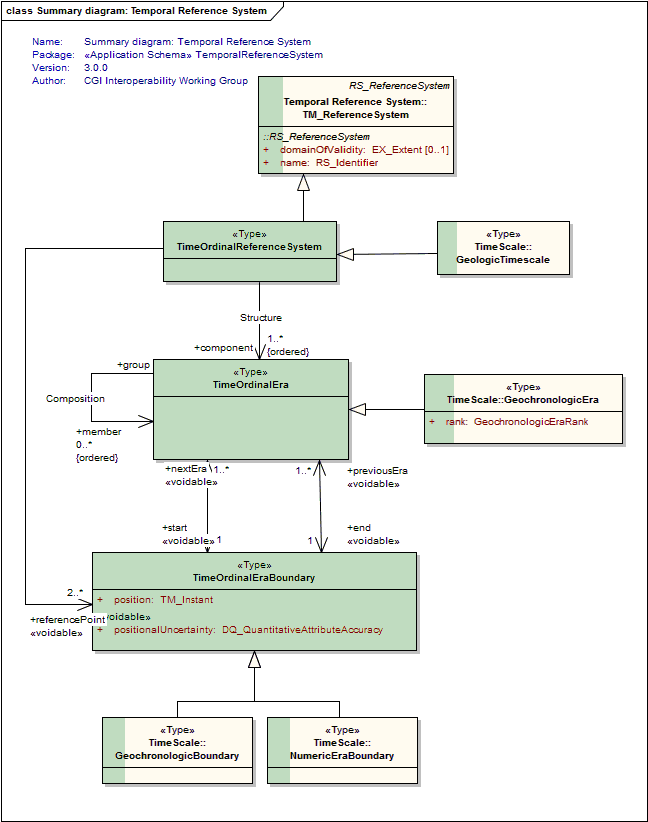
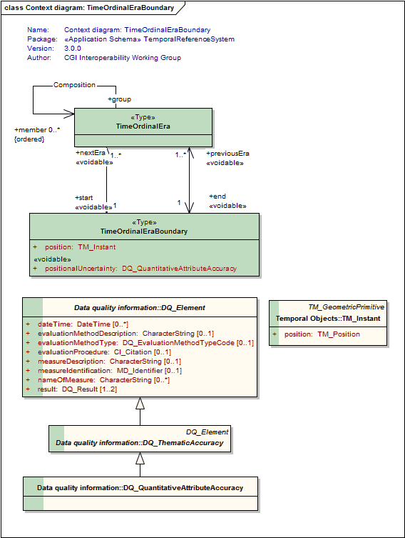
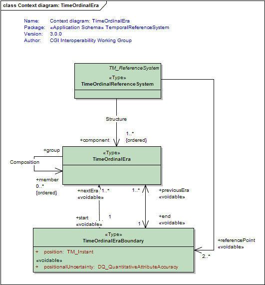
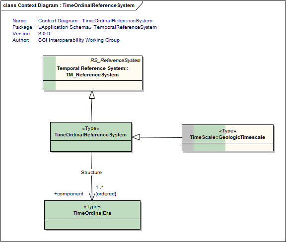

Package GeoSciML/TemporalReferenceSystem
This package is an extension of ISO19108 Temporal Schema
Class Summary |
|
| <<Type>> Classes | |
TimeOrdinalEra
<<Type>>
|
The association of an era with a stratotype is optional. In the GSSP approach recommended by ICS for the Global Geologic Timescale, Unit Stratotypes are not used. Rather, the association of an Era with geologic units and sections is indirect, via the association of an era with Boundaries, which are in turn tied to Stratotype Points, which occur within host Stratotype Sections. Note that the "German School" defines stratigraphic eras conceptually, without reference to stratotypes. |
TimeOrdinalEraBoundary
<<Type>>
|
A point in Earth's history which bounds a TimeOrdinalEra. |
TimeOrdinalReferenceSystem
<<Type>>
|
A time reference system comprised of an ordered set of time periods (time ordinal eras). |
Tagged Values |
||
| Tag | Value | Notes |
| classMap | https://www.seegrid.csiro.au/subversion/GeoSciML/temporalReferenceSystem/trunk/classmap/ClassMap_TRS_GeoSciML_v3.xml | |
| gmlProfileSchema | #NOTES#Description: URL of the schema location of a GML profile (optional) | Description: URL of the schema location of a GML profile (optional) |
| owner | IUGS Commission for the Management and Application of Geoscience Information | |
| schemaLocation | https://schemas.geosciml.org/temporalreferencesystem/3.0/trs.xsd | |
| targetNamespace | http://xmlns.geosciml.org/TemporalReferenceSystem/3.0 | Default: FIXME Description: Target XML namespace of the application schema |
| version | 3.0.0 | Default: FIXME Description: Current version of the application schema |
| xmlns | gsmltrs | Default: FIXME Description: Namespace prefix to be used as short form of the target namespace |
| xsdDocument | trs.xsd | Default: FIXME Description: Name of an XML Schema document to create representing the content of this package |
| xsdEncodingRule | iso19136_2007_INSPIRE_Extensions | Values: iso19136_2007 | iso19139_2007 | iso19136_2007_INSPIRE_Extensions Default: iso19136_2007 Description: XML Schema encoding rule to apply |
UML Diagram: Summary diagram: Temporal Reference System

UML Diagram: Context diagram: TimeOrdinalEraBoundary

UML Diagram: Context diagram: TimeOrdinalEra

UML Diagram: Context Diagram : TimeOrdinalReferenceSystem
